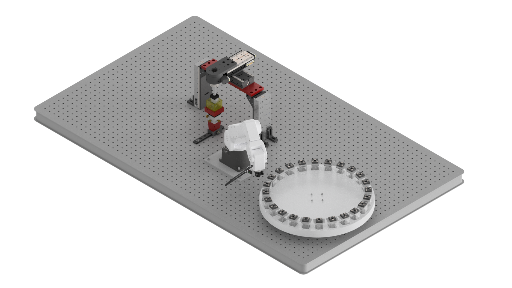

navigate-at-scale
navigate-at-scale is a plugin for navigate, which aims to enable high-throughput microscopy. It is designed to work with a Mecademic Meca500 robotic arm and a Thorlabs HDR50 rotation stage. The plugin provides a user-friendly interface for setting up and running high-throughput imaging experiments.

Note
This project is under active development. See our GitHub repository for updates.
Warning
Please be advised that while the Dean Lab has implemented several safeguards in the automation of hardware, including but not limited to stage limits, voltage minimums, and maximums, are more, there are inherent risks associated with the use of such automated systems. Despite these precautions, the complexity and nature of automated hardware can lead to unpredictable outcomes. Therefore, the Dean Lab and UT Southwestern expressly disclaim any responsibility for any damages, losses, or injuries that may arise from or be related to the use of navigate or navigate-at-scale. Users should be aware of these risks and agree to utilize navigate and navigate-at-scale at their own risk.
Getting Started
Development
Authors
navigate-at-scale was developed by the following individuals as part of their Senior Capstone project at the University of Texas Dallas.
Sai Bommisetty
Joy Camposagrado
James Harrigan
Rayyan Sappayani
Abhijeet Kulkarni
Besher Nusair
Funding
navigate and navigate-at-scale is supported by:
UT Southwestern and University of North Carolina Center for Cell Signaling, NIH NIGMS RM1GM145399.
The Center for Metastatic Tumor Imaging, NIH NCI U54CA268072.
President’s Research Council, UT Southwestern Medical Center.
Simmons Comprehensive Cancer Center Translational Seed Grant, UT Southwestern Medical Center.